David is a lifelong dissident and intellectual rebel. He despises political correctness, which replaces real, needy victims with narcissistic leftists out for a free meal. Though still a young man, he has watched society descend into its present morass with great sadness, combined with a determination to help make things better. He tweets when there's something worth tweeting here.
Men need to realize that women will hit the wall by their own efforts as much as nature and aging will do it for them. Plenty of guys have dated or married an attractive woman who suddenly gave up on their looks and jumped into the abyss.
Even when women accelerate the approach of the wall through excessive food, bad plastic surgery, or too much tanning, can you really blame them or convince them out of it? They will hamster away, blaming everyone but themselves. Yet men can still do well by remembering that any woman can be struck down by Early Onset Wallitis. Be prepared and be warned because you may have to escape from her sinking ship.
1.
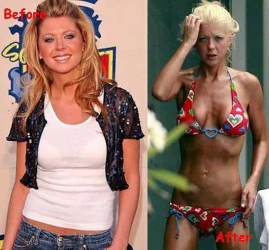
Actress Tara Reid’s worst photos in her youth, during her early American Pie days, easily put her in the top 10% of American women. It would seem that she both went too hard to regain her looks (plastic surgery) and frequently used denial (drugs and partying) to cope.
2.
This girl wasn’t a perfect 10 but she gains entry to the field for this spectacular effort. From bangable skinny tail to untouchable sea creature is a journey few will take as quickly as her.
3.
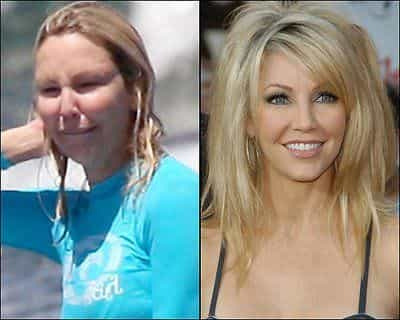
Heather Locklear’s fall is pretty impressive. Whilst arguably no woman looks their best after a dip in the ocean, her decline is amazing when you consider that the former Spin City actress used to look like this:
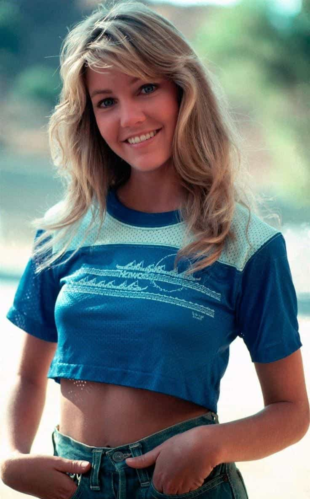
Take her away from a make-up chair and today she resembles this:
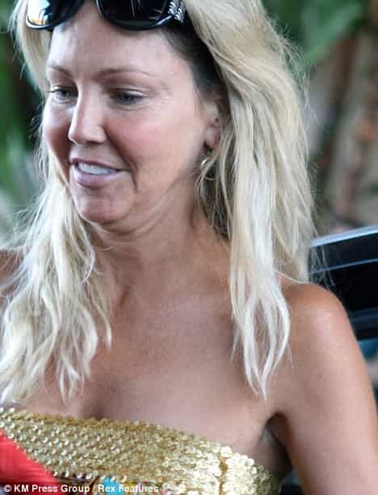
Many young women look far worse than her, true. Regardless, the inevitable wall is real.
4.
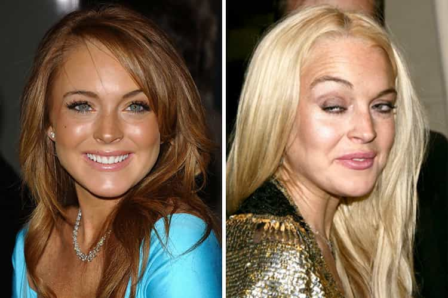
Something of an archetypal example, Lindsay Lohan’s descent is one for the ages. Father Time (or her drug dealer) hasn’t had her in the crosshairs for long, but look what has already happened:
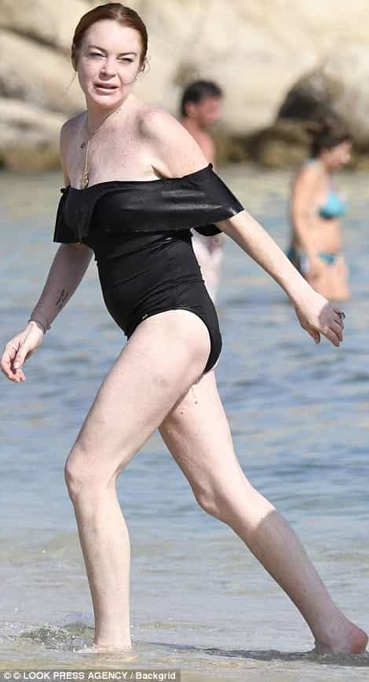
5.
One can only hope that the gentleman in the “before” picture is no longer with her. Knowing today’s dating climate, however, he probably still is.
6.
Though she was beginning to look weird and homely during her time on Charmed, Rose McGowan in her late teens and early twenties was certainly a brown-eyed beauty. Then came the aging and plastic surgery. After that she was ruined further by feminism:
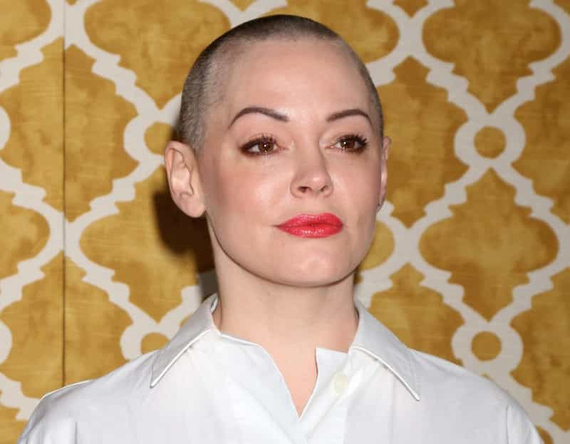
7.
Cue “Fuck this gay Earth” GIFs. What happened above is a crime against humanity and the perpetrators–cake stores, McDonalds, her parents, and the girl herself–should be punished severely.
8.
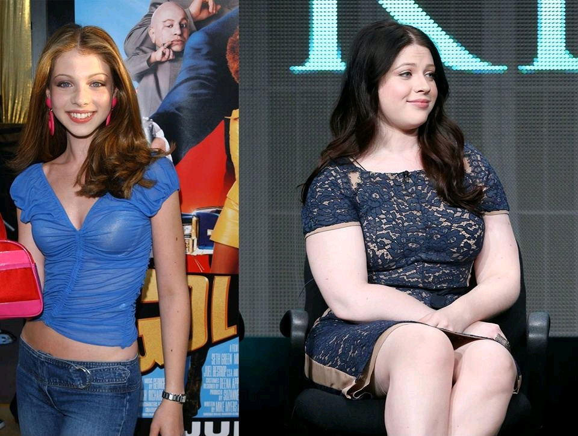
Michelle Trachtenberg might be a loss for the ages. Anyone who has seen Eurotrip will fondly remember this girl bending her nubile self and tight ass down (who wouldn’t have tapped that?).
9.
Breaking news! Aerosmith pleads for lead singer Steven Tyler to be returned safely after suspected kidnapping.
10.
Carrie Fisher killed off the beauty of Princess Leia for countless men long before she passed away in real life. Cocaine is a hell of a drug.
11.
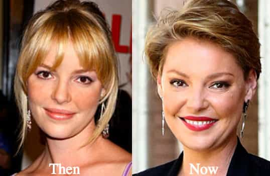
Katherine Heigl is one of the great case studies of female celebrities who really discovered the words “misogyny” and “feminism” after they found themselves at the wall. Hitting it has been a very hard tonic to swallow for her.
12.
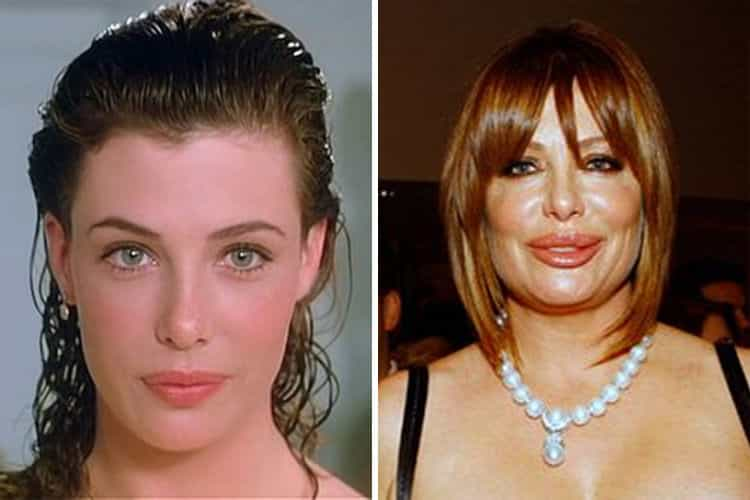
If you’ve watched The Woman in Red with Gene Wilder (aka Willy Wonka), you will know that Kelly LeBrock was amongst the most beautiful women of the 1980s. The problem for Kelly is that her idea of an honorable, gradual retreat from her prime became a panicked, plastic surgery-inspired stampede.
13.
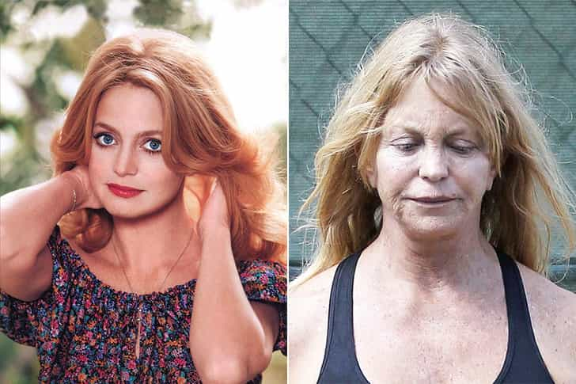
Poor Goldie Hawn. She was quite something in an era without ready-made Instagram filters.
14.
Behold the horror of unchecked feminism! Before:
After:
The SJW daughter of actor Russ Tamblyn is currently busy at work peddling unsubstantiated “sexual harassment” allegations about men like cinematic superstar and political warrior James Woods. Anything and everything to distract from one’s impact with the wall.
15.
Be prepared for this one…
Jennifer Love Hewitt really blew what she had. It’s therefore time for that heartbreaking violin piece from the film Titanic:
16.
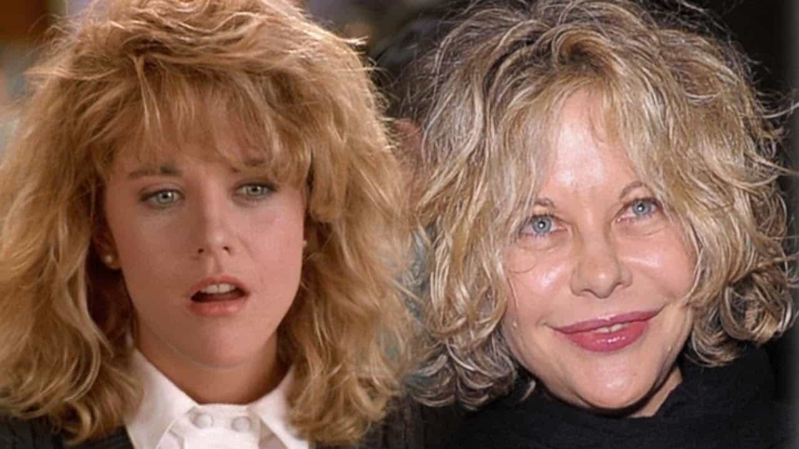
Why, Meg Ryan, why? Dennis Quaid and Russell Crowe were wise to eject when they did.
17.
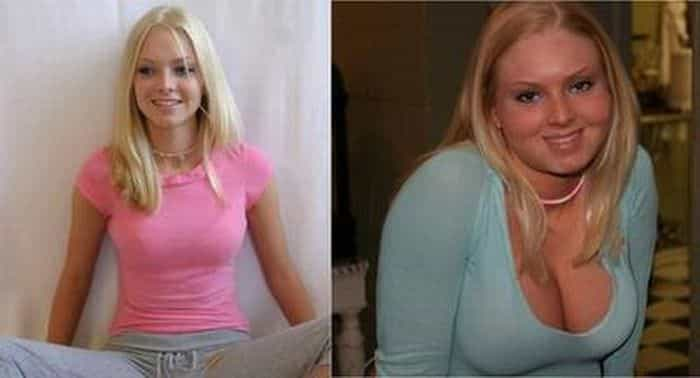
Now able to speak after their initial terror, millions of young men collectively cried out into the night. The former Dairy Queen had become the Queen of Dairy.
18.
What we have seen here (and I’m not talking about the rainbow dress) will never be spoken of again. Some things are better left unsaid.
19.
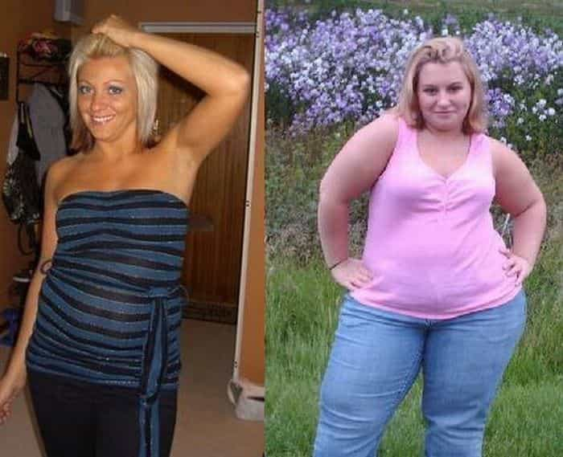
Hitting 25 or 30 shouldn’t mean putting on 25 or 30 pounds a month. But try telling that to certain people.
20.
Britney Spears violated me one more time. Where’s my eye bleach?
21.
The girl on the right in both photos got hit hard:
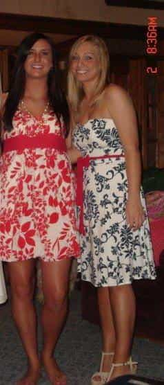
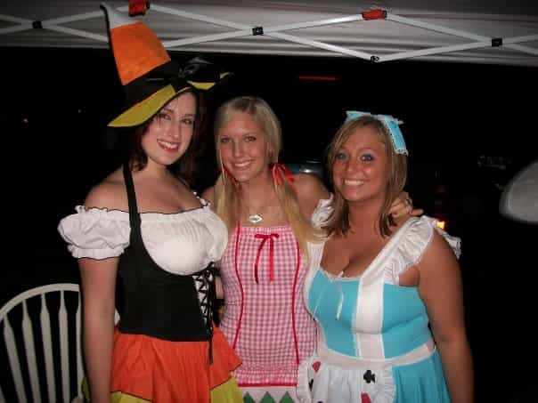
Someone took the German culture theme (eating bratwurst and pork knuckle) too seriously.
22.
A 21st-century tragedy in four acts. Wanna guess if she’s been wifed up or not?
23.
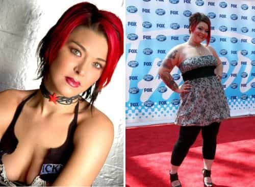
Nikki McKibbin went from hot to “help my food addiction.” Even in an article about slides and walls, this is a very bad change.
24.
I couldn’t believe this was the same girl, but multiple sites say it is. Sadly, we’ve all seen declines as bad as this one, so it’s likely to be a true story.
25.
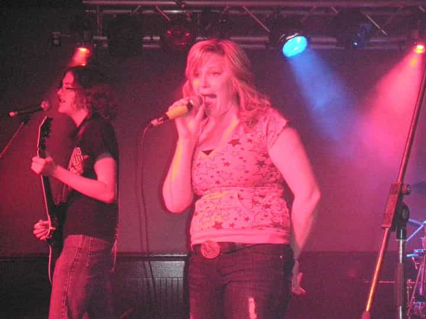
It’s hard to tell in the second photo if she’s singing or screaming after remembering what she used to look like. Either way, the juxtaposition is shocking.
26.
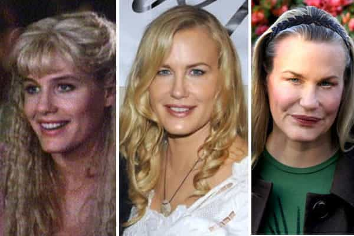
Who can forget a young Daryl Hannah’s gymnastic skills when she played a super-hot female android in Blade Runner? Alas, those days are long past.
27.
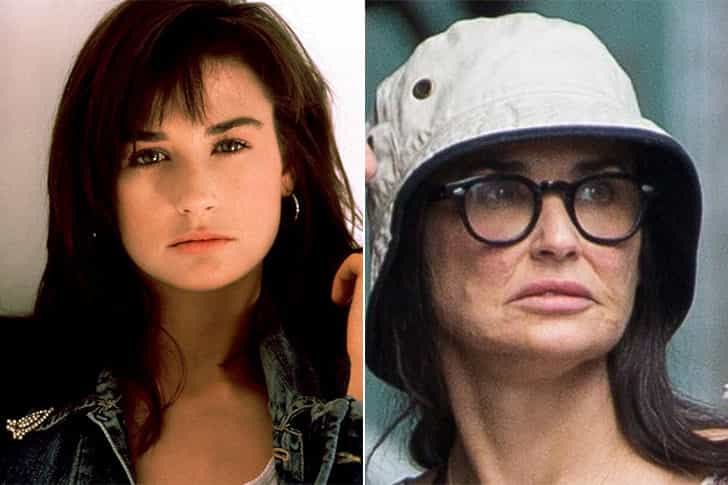
Demi Moore was smokin’ in Striptease, despite already having kids in real life, and was truly breathtaking pre-children. Nevertheless, in 2018 things have gone waaaay downhill.
28.
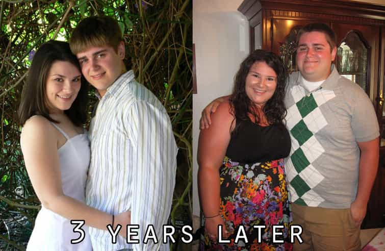
The modern descent of the American woman (and man) in one picture. Well, he can’t exactly fault her, given he ballooned as well.
29.
At least this story involves a happy ending—Christina Aguilera has since lost all this extra weight. Similar things can’t be said of most people who get to this stage.
30.
I have no words for this last one, so the following image will suffice:
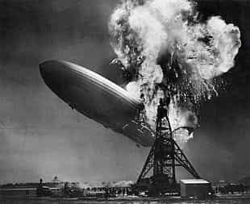
It’s going to get much worse
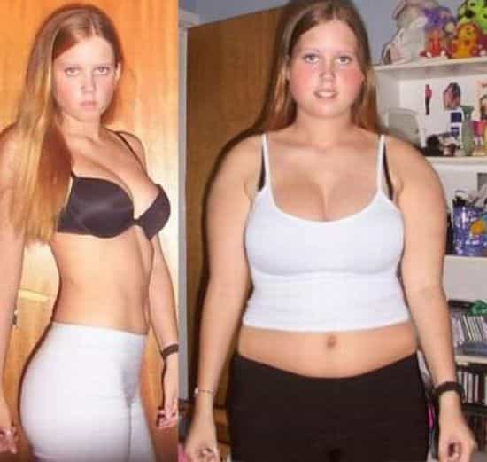
It’s only 2018. Of course, some of the older women here (e.g., Goldie Hawn) have a lot more excuses than their “youthful” counterparts. The younger ones are inexcusably paving the way for others to break their wall speed records and cause much bigger explosions as they do. 2030 will probably make 2018 look like a world of Victoria’s Secret models.